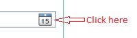

Here you should input the name of the festival you wish to create. This field cannot be left empty.
This field is autogenerated for you. It is used in the application as a unique identification. No two festivals have the same ID.
Here you can select the date. The format should be DD/MM/YY, DD/MM/YYYY, DD-MMM-YY or DD-MMM-YYYY. You can either enter it manually or initate the Date Picker Interface. This field cannot be left empty.
Here you can input the description of the festival, if you wish.
When you are finished inputing all the data on this step, press the Next button. You will be notified if you missed any field that has to be filled.